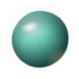

Gradient orb · 3 concentric rings
Used on the AI coach panel hero, on chat avatars next to assistant messages, and as a thinking indicator (subtle pulse). Core is a radial gradient — white → primary-soft → primary.